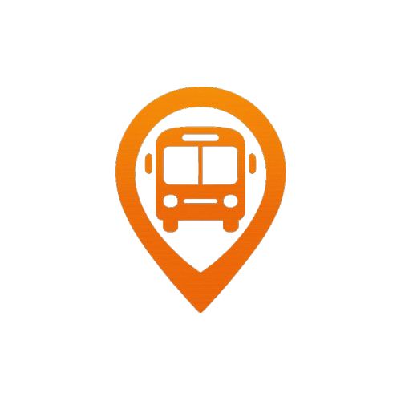

Where Bus
Sobre o Nosso Site
Nosso site foi criado por dois estudantes que conhecem de perto a correria do dia a dia de quem depende de transporte para estudar. A ideia surgiu da necessidade real de saber exatamente onde o transporte está, sem precisar ficar esperando na rua, sem saber o horário certo em que ele vai passar. A plataforma foi desenvolvida com o intuito de oferecer mais praticidade, conforto e segurança para os estudantes. Com ela, é possível acompanhar em tempo real a localização do transporte escolar, o que permite que o aluno se organize melhor em casa — seja para comer com calma, tomar um banho tranquilo ou terminar algum compromisso sem correrias. Além disso, o site ajuda a evitar atrasos, garantindo que o estudante esteja sempre pronto no momento certo, sem a preocupação de perder o transporte ou precisar sair com pressa. É uma solução pensada por quem vive essa realidade, para ajudar muitas outras pessoas a enfrentarem seus dias com mais tranquilidade. Nosso objetivo é tornar a rotina dos estudantes mais leve e eficiente, usando a tecnologia como aliada para melhorar a experiência de quem precisa se locomover todos os dias para buscar seus sonhos. E isso é só o começo — queremos continuar evoluindo a plataforma, ouvindo nossos usuários e trazendo sempre novas melhorias.
Nossa Ferramenta de Monitoramento de Transporte
Nossa plataforma foi desenvolvida para facilitar a vida de quem utiliza o transporte público no seu dia a dia, especialmente estudantes que precisam planejar sua rotina de forma eficiente. A ferramenta oferece um mapa interativo que permite visualizar, em tempo real, tanto a sua localização quanto a do motorista do ônibus, além de informações detalhadas sobre a rota que ele está seguindo. Com isso, o usuário consegue acompanhar a trajetória do ônibus em tempo real e saber exatamente onde ele está, o que facilita o planejamento de saída de casa. Você pode ver a distância até o ponto de encontro, o que proporciona uma sensação de segurança e tranquilidade, pois evita que você saia de casa cedo demais ou se atrase. Além disso, a plataforma oferece a possibilidade de acompanhar o que o ônibus está fazendo a cada momento: se ele está parado, se está em movimento, ou se há alguma alteração na rota. Essa visibilidade proporciona maior controle e evita imprevistos que poderiam afetar o seu horário. Em resumo, nossa ferramenta é uma aliada poderosa para quem precisa planejar seu trajeto com precisão, podendo se basear em dados concretos e atualizados para não perder tempo e garantir que você chegue onde precisa, no momento certo